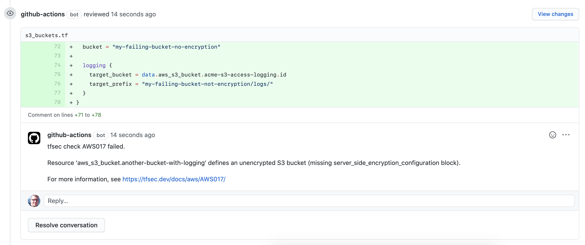
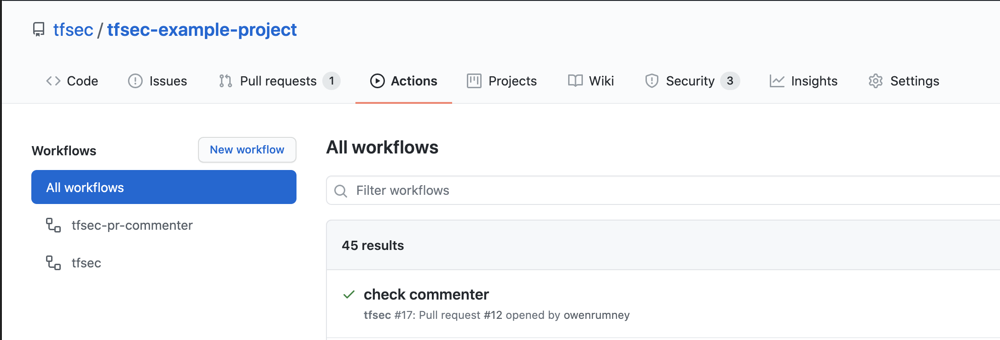
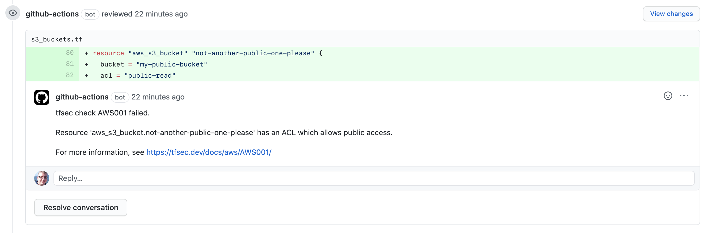

In October 2020, the Thoughtworks Tech Radar promoted tfsec to Trial status. In the past few months, there has been a flurry of activity to improve performance, rewrite the parsing and add new features.
One of the recent additions is a Github Action that will process your Github Pull Request commits and add comments where there are tfsec failures.
Example
Let’s take a possible addition to a code repo where the PR includes the creation of a bucket;
resource "aws_s3_bucket" "another-bucket-with-logging" {
bucket = "my-failing-bucket-no-encryption"
logging {
target_bucket = data.aws_s3_bucket.acme-s3-access-logging.id
target_prefix = "my-failing-bucket-not-encryption/logs/"
}
}
This bucket has logging, but the definition doesn’t set up encryption on the bucket. This fails tfsec check AWS017.
When the PR is committed, the Github Action runs and comments directly to the PR has failed the tfsec check. Reviewers can now quickly see the issues and act accordingly.

Configuring your project
With Github Actions it is now incredibly easy to add this check to your repositories quickly.
The tfsec PR Commenter is available in the Marketplace
The steps are quite simple;
- In the root of the project there must be a
.github/workflowsdirectory - Create a new file called something like
tfsec_pr_commenter.yml- the only requirement being that it has theymlsuffix. -
The content of the file should be as below
name: tfsec-pr-commenter on: pull_request: jobs: tfsec_commenter: name: tfsec PR commenter runs-on: ubuntu-latest steps: - name: Clone repo uses: actions/checkout@master - name: tfsec commenter uses: tfsec/tfsec-pr-commenter-action@main with: github_token: ${{ secrets.GITHUB_TOKEN }}
A quick note on secrets.GITHUB_TOKEN - this is created automatically for you when you start using Actions. Additional secrets can be added in the Settings of the project repo, but this one is all you need.
Now, when you go to the Actions tab in the Github page for your repo, you can see the action which will run on PR commit.

When the PR has a commit or is closed and reopened, the Github Action will run and add the comment, as below
As you can see in the comment, this is a multi line comment. Something is missing from the definition so the error spans the entire aws_s3_bucket block.
When there is a specific issue, for example an attribute is set to a value it shouldn’t be, the comment is scoped to the single line. This can be seen in the image below;

Shameless Plug
The commenting library used in the action is owenrumney/go-github-pr-commenter - this can be used by pretty much any CI process to add comments to PRs in Github with a very simple interface;
formattedErrorMessage := `
tfsec check AWS017 failed.
Resource 'aws_s3_bucket.another-bucket-with-logging' defines an unencrypted S3 bucket (missing server_side_encryption_configuration block).
For more information, see https://tfsec.dev/docs/aws/AWS017/
`
c, err := commenter.NewCommenter(token, "tfsec", "tfsec-example-project", 8)
c.WriteMultiLineComment("s3_bucket.tf", formattedErrorMessage, 71, 78)